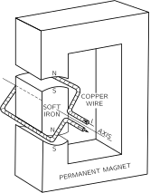
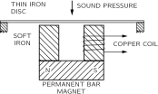
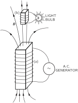
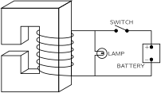
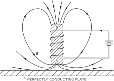
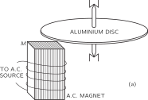

16. Induced Currents
16–1 Motors and generators#
The discovery in 1820 that there was a close connection between electricity and magnetism was very exciting—until then, the two subjects had been considered as quite independent. The first discovery was that currents in wires make magnetic fields; then, in the same year, it was found that wires carrying current in a magnetic field have forces on them.
One of the excitements whenever there is a mechanical force is the possibility of using it in an engine to do work. Almost immediately after their discovery, people started to design electric motors using the forces on current-carrying wires. The principle of the electromagnetic motor is shown in bare outline in Fig. 16–1. A permanent magnet—usually with some pieces of soft iron—is used to produce a magnetic field in two slots. Across each slot there is a north and south pole, as shown. A rectangular coil of copper is placed with one side in each slot. When a current passes through the coil, it flows in opposite directions in the two slots, so the forces are also opposite, producing a torque on the coil about the axis shown. If the coil is mounted on a shaft so that it can turn, it can be coupled to pulleys or gears and can do work.

The same idea can be used for making a sensitive instrument for electrical measurements. Thus the moment the force law was discovered the precision of electrical measurements was greatly increased. First, the torque of such a motor can be made much greater for a given current by making the current go around many turns instead of just one. Then the coil can be mounted so that it turns with very little torque—either by supporting its shaft on very delicate jewel bearings or by hanging the coil on a very fine wire or a quartz fiber. Then an exceedingly small current will make the coil turn, and for small angles the amount of rotation will be proportional to the current. The rotation can be measured by gluing a pointer to the coil or, for the most delicate instruments, by attaching a small mirror to the coil and looking at the shift of the image of a scale. Such instruments are called galvanometers. Voltmeters and ammeters work on the same principle.
The same ideas can be applied on a large scale to make large motors for providing mechanical power. The coil can be made to go around and around by arranging that the connections to the coil are reversed each half-turn by contacts mounted on the shaft. Then the torque is always in the same direction. Small dc motors are made just this way. Larger motors, dc or ac, are often made by replacing the permanent magnet by an electromagnet, energized from the electrical power source.
With the realization that electric currents make magnetic fields, people immediately suggested that, somehow or other, magnets might also make electric fields. Various experiments were tried. For example, two wires were placed parallel to each other and a current was passed through one of them in the hope of finding a current in the other. The thought was that the magnetic field might in some way drag the electrons along in the second wire, giving some such law as “likes prefer to move alike.” With the largest available current and the most sensitive galvanometer to detect any current, the result was negative. Large magnets next to wires also produced no observed effects. Finally, Faraday discovered in 1840 the essential feature that had been missed—that electric effects exist only when there is something changing. If one of a pair of wires has a changing current, a current is induced in the other, or if a magnet is moved near an electric circuit, there is a current. We say that currents are induced. This was the induction effect discovered by Faraday. It transformed the rather dull subject of static fields into a very exciting dynamic subject with an enormous range of wonderful phenomena. This chapter is devoted to a qualitative description of some of them. As we will see, one can quickly get into fairly complicated situations that are hard to analyze quantitatively in all their details. But never mind, our main purpose in this chapter is first to acquaint you with the phenomena involved. We will take up the detailed analysis later.
We can easily understand one feature of magnetic induction from what we already know, although it was not known in Faraday’s time. It comes from the \mathbf{v}\times\mathbf{B} force on a moving charge that is proportional to its velocity in a magnetic field. Suppose that we have a wire which passes near a magnet, as shown in Fig. 16–2, and that we connect the ends of the wire to a galvanometer. If we move the wire across the end of the magnet the galvanometer pointer moves.
The magnet produces some vertical magnetic field, and when we push the wire across the field, the electrons in the wire feel a sideways force—at right angles to the field and to the motion. The force pushes the electrons along the wire. But why does this move the galvanometer, which is so far from the force? Because when the electrons which feel the magnetic force try to move, they push—by electric repulsion—the electrons a little farther down the wire; they, in turn, repel the electrons a little farther on, and so on for a long distance. An amazing thing.
It was so amazing to Gauss and Weber—who first built a galvanometer—that they tried to see how far the forces in the wire would go. They strung a wire all the way across their city. Mr. Gauss, at one end, connected the wires to a battery (batteries were known before generators) and Mr. Weber watched the galvanometer move. They had a way of signaling long distances—it was the beginning of the telegraph! Of course, this has nothing directly to do with induction—it has to do with the way wires carry currents, whether the currents are pushed by induction or not.
Now suppose in the setup of Fig. 16–2 we leave the wire alone and move the magnet. We still see an effect on the galvanometer. As Faraday discovered, moving the magnet under the wire—one way—has the same effect as moving the wire over the magnet—the other way. But when the magnet is moved, we no longer have any \mathbf{v}\times\mathbf{B} force on the electrons in the wire. This is the new effect that Faraday found. Today, we might hope to understand it from a relativity argument.
We already understand that the magnetic field of a magnet comes from its internal currents. So we expect to observe the same effect if instead of a magnet in Fig. 16–2 we use a coil of wire in which there is a current. If we move the wire past the coil there will be a current through the galvanometer, or also if we move the coil past the wire. But there is now a more exciting thing: If we change the magnetic field of the coil not by moving it, but by changing its current, there is again an effect in the galvanometer. For example, if we have a loop of wire near a coil, as shown in Fig. 16–3, and if we keep both of them stationary but switch off the current, there is a pulse of current through the galvanometer. When we switch the coil on again, the galvanometer kicks in the other direction.
Whenever the galvanometer in a situation such as the one shown in Fig. 16–2, or in Fig. 16–3, has a current, there is a net push on the electrons in the wire in one direction along the wire. There may be pushes in different directions at different places, but there is more push in one direction than another. What counts is the push integrated around the complete circuit. We call this net integrated push the electromotive force (abbreviated emf) in the circuit. More precisely, the emf is defined as the tangential force per unit charge in the wire integrated over length, once around the complete circuit. Faraday’s complete discovery was that emf’s can be generated in a wire in three different ways: by moving the wire, by moving a magnet near the wire, or by changing a current in a nearby wire.
Let’s consider the simple machine of Fig. 16–1 again, only now, instead of putting a current through the wire to make it turn, let’s turn the loop by an external force, for example by hand or by a waterwheel. When the coil rotates, its wires are moving in the magnetic field and we will find an emf in the circuit of the coil. The motor becomes a generator.
The coil of the generator has an induced emf from its motion. The amount of the emf is given by a simple rule discovered by Faraday. (We will just state the rule now and wait until later to examine it in detail.) The rule is that when the magnetic flux that passes through the loop (this flux is the normal component of \mathbf{B} integrated over the area of the loop) is changing with time, the emf is equal to the rate of change of the flux. We will refer to this as “the flux rule.” You see that when the coil of Fig. 16–1 is rotated, the flux through it changes. At the start some flux goes through one way; then when the coil has rotated 180^\circ the same flux goes through the other way. If we continuously rotate the coil the flux is first positive, then negative, then positive, and so on. The rate of change of the flux must alternate also. So there is an alternating emf in the coil. If we connect the two ends of the coil to outside wires through some sliding contacts—called slip-rings—(just so the wires won’t get twisted) we have an alternating-current generator.
Or we can also arrange, by means of some sliding contacts, that after every one-half rotation, the connection between the coil ends and the outside wires is reversed, so that when the emf reverses, so do the connections. Then the pulses of emf will always push currents in the same direction through the external circuit. We have what is called a direct-current generator.
The machine of Fig. 16–1 is either a motor or a generator. The reciprocity between motors and generators is nicely shown by using two identical dc “motors” of the permanent magnet kind, with their coils connected by two copper wires. When the shaft of one is turned mechanically, it becomes a generator and drives the other as a motor. If the shaft of the second is turned, it becomes the generator and drives the first as a motor. So here is an interesting example of a new kind of equivalence of nature: motor and generator are equivalent. The quantitative equivalence is, in fact, not completely accidental. It is related to the law of conservation of energy.
Another example of a device that can operate either to generate emf’s or to respond to emf’s is the receiver of a standard telephone—that is, an “earphone.” The original telephone of Bell consisted of two such “earphones” connected by two long wires. The basic principle is shown in Fig. 16–4. A permanent magnet produces a magnetic field in two “yokes” of soft iron and in a thin diaphragm that is moved by sound pressure. When the diaphragm moves, it changes the amount of magnetic field in the yokes. Therefore a coil of wire wound around one of the yokes will have the flux through it changed when a sound wave hits the diaphragm. So there is an emf in the coil. If the ends of the coil are connected to a circuit, a current which is an electrical representation of the sound is set up.

If the ends of the coil of Fig. 16–4 are connected by two wires to another identical gadget, varying currents will flow in the second coil. These currents will produce a varying magnetic field and will make a varying attraction on the iron diaphragm. The diaphragm will wiggle and make sound waves approximately similar to the ones that moved the original diaphragm. With a few bits of iron and copper the human voice is transmitted over wires!
(The modern home telephone uses a receiver like the one described but uses an improved invention to get a more powerful transmitter. It is the “carbon-button microphone,” that uses sound pressure to vary the electric current from a battery.)
16–2 Transformers and inductances#
One of the most interesting features of Faraday’s discoveries is not that an emf exists in a moving coil—which we can understand in terms of the magnetic force q\mathbf{v}\times\mathbf{B} —but that a changing current in one coil makes an emf in a second coil. And quite surprisingly the amount of emf induced in the second coil is given by the same “flux rule”: that the emf is equal to the rate of change of the magnetic flux through the coil. Suppose that we take two coils, each wound around separate bundles of iron sheets (these help to make stronger magnetic fields), as shown in Fig. 16–5. Now we connect one of the coils—coil (a)—to an alternating-current generator. The continually changing current produces a continuously varying magnetic field. This varying field generates an alternating emf in the second coil—coil (b). This emf can, for example, produce enough power to light an electric bulb.

The emf alternates in coil (b) at a frequency which is, of course, the same as the frequency of the original generator. But the current in coil (b) can be larger or smaller than the current in coil (a). The current in coil (b) depends on the emf induced in it and on the resistance and inductance of the rest of its circuit. The emf can be less than that of the generator if, say, there is little flux change. Or the emf in coil (b) can be made much larger than that in the generator by winding coil (b) with many turns, since in a given magnetic field the flux through the coil is then greater. (Or if you prefer to look at it another way, the emf is the same in each turn, and since the total emf is the sum of the emf’s of the separate turns, many turns in series produce a large emf.)
Such a combination of two coils—usually with an arrangement of iron sheets to guide the magnetic fields—is called a transformer. It can “transform” one emf (also called a “voltage”) to another.
There are also induction effects in a single coil. For instance, in the setup in Fig. 16–5 there is a changing flux not only through coil (b), which lights the bulb, but also through coil (a). The varying current in coil (a) produces a varying magnetic field inside itself and the flux of this field is continually changing, so there is a self-induced emf in coil (a). There is an emf acting on any current when it is building up a magnetic field—or, in general, when its field is changing in any way. The effect is called self-inductance.
When we gave “the flux rule” that the emf is equal to the rate of change of the flux linkage, we didn’t specify the direction of the emf. There is a simple rule, called Lenz’s rule, for figuring out which way the emf goes: the emf tries to oppose any flux change. That is, the direction of an induced emf is always such that if a current were to flow in the direction of the emf, it would produce a flux of \mathbf{B} that opposes the change in \mathbf{B} that produces the emf. Lenz’s rule can be used to find the direction of the emf in the generator of Fig. 16–1, or in the transformer winding of Fig. 16–3.
In particular, if there is a changing current in a single coil (or in any wire) there is a “back” emf in the circuit. This emf acts on the charges flowing in coil (a) of Fig. 16–5 to oppose the change in magnetic field, and so in the direction to oppose the change in current. It tries to keep the current constant; it is opposite to the current when the current is increasing, and it is in the direction of the current when it is decreasing. A current in a self-inductance has “inertia,” because the inductive effects try to keep the flow constant, just as mechanical inertia tries to keep the velocity of an object constant.

Any large electromagnet will have a large self-inductance. Suppose that a battery is connected to the coil of a large electromagnet, as in Fig. 16–6, and that a strong magnetic field has been built up. (The current reaches a steady value determined by the battery voltage and the resistance of the wire in the coil.) But now suppose that we try to disconnect the battery by opening the switch. If we really opened the circuit, the current would go to zero rapidly, and in doing so it would generate an enormous emf. In most cases this emf would be large enough to develop an arc across the opening contacts of the switch. The high voltage that appears might also damage the insulation of the coil—or you, if you are the person who opens the switch! For these reasons, electromagnets are usually connected in a circuit like the one shown in Fig. 16–6. When the switch is opened, the current does not change rapidly but remains steady, flowing instead through the lamp, being driven by the emf from the self-inductance of the coil.
16–3 Forces on induced currents#

You have probably seen the dramatic demonstration of Lenz’s rule made with the gadget shown in Fig. 16–7. It is an electromagnet, just like coil (a) of Fig. 16–5. An aluminum ring is placed on the end of the magnet. When the coil is connected to an alternating-current generator by closing the switch, the ring flies into the air. The force comes, of course, from the induced currents in the ring. The fact that the ring flies away shows that the currents in it oppose the change of the field through it. When the magnet is making a north pole at its top, the induced current in the ring is making a downward-pointing north pole. The ring and the coil are repelled just like two magnets with like poles opposite. If a thin radial cut is made in the ring the force disappears, showing that it does indeed come from the currents in the ring.
If, instead of the ring, we place a disc of aluminum or copper across the end of the electromagnet of Fig. 16–7, it is also repelled; induced currents circulate in the material of the disc, and again produce a repulsion.
An interesting effect, similar in origin, occurs with a sheet of a perfect conductor. In a “perfect conductor” there is no resistance whatever to the current. So if currents are generated in it, they can keep going forever. In fact, the slightest emf would generate an arbitrarily large current—which really means that there can be no emf’s at all. Any attempt to make a magnetic flux go through such a sheet generates currents that create opposite \mathbf{B} fields—all with infinitesimal emf’s, so with no flux entering.

If we have a sheet of a perfect conductor and put an electromagnet next to it, when we turn on the current in the magnet, currents called eddy currents appear in the sheet, so that no magnetic flux enters. The field lines would look as shown in Fig. 16–8. The same thing happens, of course, if we bring a bar magnet near a perfect conductor. Since the eddy currents are creating opposing fields, the magnets are repelled from the conductor. This makes it possible to suspend a bar magnet in air above a sheet of perfect conductor shaped like a dish, as shown in Fig. 16–9. The magnet is suspended by the repulsion of the induced eddy currents in the perfect conductor. There are no perfect conductors at ordinary temperatures, but some materials become perfect conductors at low enough temperatures. For instance, below 3.8^\circ K tin conducts perfectly. It is called a superconductor.
If the conductor in Fig. 16–8 is not quite perfect there will be some resistance to flow of the eddy currents. The currents will tend to die out and the magnet will slowly settle down. The eddy currents in an imperfect conductor need an emf to keep them going, and to have an emf the flux must keep changing. The flux of the magnetic field gradually penetrates the conductor.
In a normal conductor, there are not only repulsive forces from eddy currents, but there can also be sidewise forces. For instance, if we move a magnet sideways along a conducting surface the eddy currents produce a force of drag, because the induced currents are opposing the changing of the location of flux. Such forces are proportional to the velocity and are like a kind of viscous force.
These effects show up nicely in the apparatus shown in Fig. 16–10. A square sheet of copper is suspended on the end of a rod to make a pendulum. The copper swings back and forth between the poles of an electromagnet. When the magnet is turned on, the pendulum motion is suddenly arrested. As the metal plate enters the gap of the magnet, there is a current induced in the plate which acts to oppose the change in flux through the plate. If the sheet were a perfect conductor, the currents would be so great that they would push the plate out again—it would bounce back. With a copper plate there is some resistance in the plate, so the currents at first bring the plate almost to a dead stop as it starts to enter the field. Then, as the currents die down, the plate slowly settles to rest in the magnetic field.

The nature of the eddy currents in the copper pendulum is shown in Fig. 16–11. The strength and geometry of the currents are quite sensitive to the shape of the plate. If, for instance, the copper plate is replaced by one which has several narrow slots cut in it, as shown in Fig. 16–12, the eddy-current effects are drastically reduced. The pendulum swings through the magnetic field with only a small retarding force. The reason is that the currents in each section of the copper have less flux to drive them, so the effects of the resistance of each loop are greater. The currents are smaller and the drag is less. The viscous character of the force is seen even more clearly if a sheet of copper is placed between the poles of the magnet of Fig. 16–10 and then released. It doesn’t fall; it just sinks slowly downward. The eddy currents exert a strong resistance to the motion—just like the viscous drag in honey.

If, instead of dragging a conductor past a magnet, we try to rotate it in a magnetic field, there will be a resistive torque from the same effects. Alternatively, if we rotate a magnet—end over end—near a conducting plate or ring, the ring is dragged around; currents in the ring will create a torque that tends to rotate the ring with the magnet.

A field just like that of a rotating magnet can be made with an arrangement of coils such as is shown in Fig. 16–13. We take a torus of iron (that is, a ring of iron like a doughnut) and wind six coils on it. If we put a current, as shown in part (a), through windings (1) and (4), there will be a magnetic field in the direction shown in the figure. If we now switch the current to windings (2) and (5), the magnetic field will be in a new direction, as shown in part (b) of the figure. Continuing the process, we get the sequence of fields shown in the rest of the figure. If the process is done smoothly, we have a “rotating” magnetic field. We can easily get the required sequence of currents by connecting the coils to a three-phase power line, which provides just such a sequence of currents. “Three-phase power” is made in a generator using the principle of Fig. 16–1, except that there are three loops fastened together on the same shaft in a symmetrical way—that is, with an angle of 120^\circ from one loop to the next. When the coils are rotated as a unit, the emf is a maximum in one, then in the next, and so on in a regular sequence. There are many practical advantages of three-phase power. One of them is the possibility of making a rotating magnetic field. The torque produced on a conductor by such a rotating field is easily shown by standing a metal ring on an insulating table just above the torus, as shown in Fig. 16–14. The rotating field causes the ring to spin about a vertical axis. The basic elements seen here are quite the same as those at play in a large commercial three-phase induction motor.
Another form of induction motor is shown in Fig. 16–15. The arrangement shown is not suitable for a practical high-efficiency motor but will illustrate the principle. The electromagnet M, consisting of a bundle of laminated iron sheets wound with a solenoidal coil, is powered with alternating current from a generator. The magnet produces a varying flux of \mathbf{B} through the aluminum disc. If we have just these two components, as shown in part (a) of the figure, we do not yet have a motor. There are eddy currents in the disc, but they are symmetric and there is no torque. (There will be some heating of the disc due to the induced currents.) If we now cover only one-half of the magnet pole with an aluminum plate, as shown in part (b) of the figure, the disc begins to rotate, and we have a motor. The operation depends on two eddy-current effects. First, the eddy currents in the aluminum plate oppose the change of flux through it, so the magnetic field above the plate always lags the field above that half of the pole which is not covered. This so-called “shaded-pole” effect produces a field which in the “shaded” region varies much like that in the “unshaded” region except that it is delayed a constant amount in time. The whole effect is as if there were a magnet only half as wide which is continually being moved from the unshaded region toward the shaded one. Then the varying fields interact with the eddy currents in the disc to produce the torque on it.

16–4 Electrical technology#
When Faraday first made public his remarkable discovery that a changing magnetic flux produces an emf, he was asked (as anyone is asked when he discovers a new fact of nature), “What is the use of it?” All he had found was the oddity that a tiny current was produced when he moved a wire near a magnet. Of what possible “use” could that be? His answer was: “What is the use of a newborn baby?”
Yet think of the tremendous practical applications his discovery has led to. What we have been describing are not just toys but examples chosen in most cases to represent the principle of some practical machine. For instance, the rotating ring in the turning field is an induction motor. There are, of course, some differences between it and a practical induction motor. The ring has a very small torque; it can be stopped with your hand. For a good motor, things have to be put together more intimately: there shouldn’t be so much “wasted” magnetic field out in the air. First, the field is concentrated by using iron. We have not discussed how iron does that, but iron can make the magnetic field tens of thousands of times stronger than copper coils alone could do. Second, the gaps between the pieces of iron are made small; to do that, some iron is even built into the rotating ring. Everything is arranged so as to get the greatest forces and the greatest efficiency—that is, conversion of electrical power to mechanical power—until the “ring” can no longer be held still by your hand.
This problem of closing the gaps and making the thing work in the most practical way is engineering. It requires serious study of design problems, although there are no new basic principles from which the forces are obtained. But there is a long way to go from the basic principles to a practical and economic design. Yet it is just such careful engineering design that has made possible such a tremendous thing as Boulder Dam and all that goes with it.
What is Boulder Dam? A huge river is stopped by a concrete wall. But what a wall it is! Shaped with a perfect curve that is very carefully worked out so that the least possible amount of concrete will hold back a whole river. It thickens at the bottom in that wonderful shape that the artists like but that the engineers can appreciate because they know that such thickening is related to the increase of pressure with the depth of the water. But we are getting away from electricity.
Then the water of the river is diverted into a huge pipe. That’s a nice engineering accomplishment in itself. The pipe feeds the water into a “waterwheel”—a huge turbine—and makes wheels turn. (Another engineering feat.) But why turn wheels? They are coupled to an exquisitely intricate mess of copper and iron, all twisted and interwoven. With two parts—one that turns and one that doesn’t. All a complex intermixture of a few materials, mostly iron and copper but also some paper and shellac for insulation. A revolving monster thing. A generator. Somewhere out of the mess of copper and iron come a few special pieces of copper. The dam, the turbine, the iron, the copper, all put there to make something special happen to a few bars of copper—an emf. Then the copper bars go a little way and circle for several times around another piece of iron in a transformer; then their job is done.
But around that same piece of iron curls another cable of copper which has no direct connection whatsoever to the bars from the generator; they have just been influenced because they passed near it—to get their emf. The transformer converts the power from the relatively low voltages required for the efficient design of the generator to the very high voltages that are best for efficient transmission of electrical energy over long cables.
And everything must be enormously efficient—there can be no waste, no loss. Why? The power for a metropolis is going through. If a small fraction were lost—one or two percent—think of the energy left behind! If one percent of the power were left in the transformer, that energy would need to be taken out somehow. If it appeared as heat, it would quickly melt the whole thing. There is, of course, some small inefficiency, but all that is required are a few pumps which circulate some oil through a radiator to keep the transformer from heating up.
Out of the Boulder Dam come a few dozen rods of copper—long, long, long rods of copper perhaps the thickness of your wrist that go for hundreds of miles in all directions. Small rods of copper carrying the power of a giant river. Then the rods are split to make more rods … then to more transformers … sometimes to great generators which recreate the current in another form … sometimes to engines turning for big industrial purposes … to more transformers … then more splitting and spreading … until finally the river is spread throughout the whole city—turning motors, making heat, making light, working gadgetry. The miracle of hot lights from cold water over 600 miles away—all done with specially arranged pieces of copper and iron. Large motors for rolling steel, or tiny motors for a dentist’s drill. Thousands of little wheels, turning in response to the turning of the big wheel at Boulder Dam. Stop the big wheel, and all the wheels stop; the lights go out. They really are connected.
Yet there is more. The same phenomena that take the tremendous power of the river and spread it through the countryside, until a few drops of the river are running the dentist’s drill, come again into the building of extremely fine instruments … for the detection of incredibly small amounts of current … for the transmission of voices, music, and pictures … for computers … for automatic machines of fantastic precision.
All this is possible because of carefully designed arrangements of copper and iron—efficiently created magnetic fields … blocks of rotating iron six feet in diameter whirling with clearances of 1/16 of an inch … careful proportions of copper for the optimum efficiency … strange shapes all serving a purpose, like the curve of the dam.
If some future archaeologist uncovers Boulder Dam, we may guess that he would admire the beauty of its curves. But also the explorers from some great future civilizations will look at the generators and transformers and say: “Notice that every iron piece has a beautifully efficient shape. Think of the thought that has gone into every piece of copper!”
This is the power of engineering and the careful design of our electrical technology. There has been created in the generator something which exists nowhere else in nature. It is true that there are forces of induction in other places. Certainly in some places around the sun and stars there are effects of electromagnetic induction. Perhaps also (though it’s not certain) the magnetic field of the earth is maintained by an analog of an electric generator that operates on circulating currents in the interior of the earth. But nowhere have there been pieces put together with moving parts to generate electrical power as is done in the generator—with great efficiency and regularity.
You may think that designing electric generators is no longer an interesting subject, that it is a dead subject because they are all designed. Almost perfect generators or motors can be taken from a shelf. Even if this were true, we can admire the wonderful accomplishment of a problem solved to near perfection. But there remain as many unfinished problems. Even generators and transformers are returning as problems. It is likely that the whole field of low temperatures and superconductors will soon be applied to the problem of electric power distribution. With a radically new factor in the problem, new optimum designs will have to be created. Power networks of the future may have little resemblance to those of today.
You can see that there is an endless number of applications and problems that one could take up while studying the laws of induction. The study of the design of electrical machinery is a life work in itself. We cannot go very far in that direction, but we should be aware of the fact that when we have discovered the law of induction, we have suddenly connected our theory to an enormous practical development. We must, however, leave that subject to the engineers and applied scientists who are interested in working out the details of particular applications. Physics only supplies the base—the basic principles that apply, no matter what. (We have not yet completed the base, because we have yet to consider in detail the properties of iron and of copper. Physics has something to say about these as we will see a little later!)
Modern electrical technology began with Faraday’s discoveries. The useless baby developed into a prodigy and changed the face of the earth in ways its proud father could never have imagined.